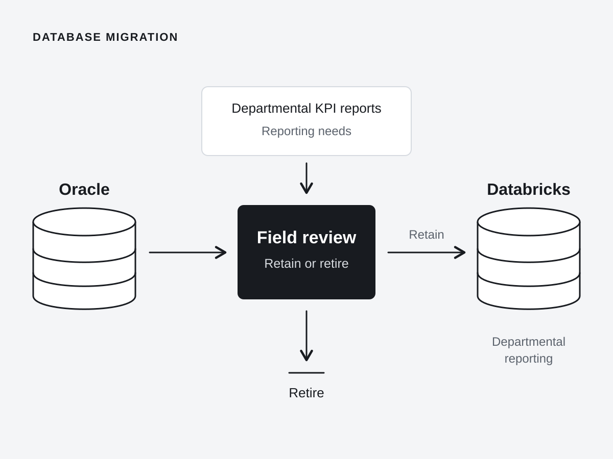

Database Migration
Aligning sales definitions and reporting needs for a platform migration

Moving data from Oracle to Databricks would not, by itself, resolve differences in how departments defined and interpreted sales. My work at Lane Crawford focused on schema and reporting: establishing what departments needed to measure before deciding which data to carry forward.
Rather than review fields in isolation, I stepped back from the existing departmental reports to the shared core KPI, sales. Working through the factors affecting sales helped clarify the measures each department needed and where their definitions differed. This gave business and technical stakeholders a common starting point for reviewing reporting requirements.
Those discussions informed the data dictionary and key calculation formulas, linking the meaning of each measure to the data needed to calculate it. The agreed definitions then guided which fields to retain or retire and how to refine the reporting framework. Reporting needs provided the basis for schema decisions, rather than carrying conflicting interpretations into the new platform.